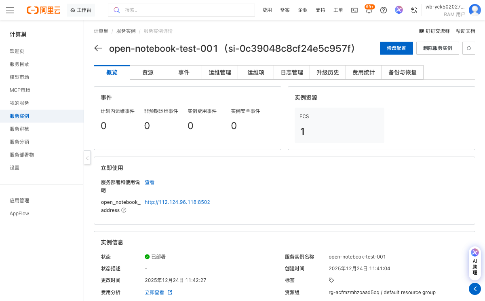

Open Notebook 社区版计算巢服务实例使用文档
概述
Open Notebook 是一个私有、多模型、100%本地化、功能齐全的 Notebook LM 替代方案。该服务允许用户在本地环境中运行AI笔记本应用，支持多种AI模型集成，提供安全、私有的AI体验。
部署操作流程
-
点击部署链接，进入服务实例部署界面，根据界面提示，填写参数。

-
查看价格，在配置页面右侧可以查看按时长费用信息。

-
点击"下一步：确认订单"按钮进入下一步
-
点击创建实例,在确认订单页面，点击"立即购买"按钮创建实例。
-
等待服务实例创建完成,部署过程通常需要1-2分钟，可以在服务详情页查看部署进度。

-
服务部署成功后，在服务详情页找到公网访问地址，点击即可打开Open Notebook服务界面。

官方网站
更多信息请访问官方文档：官网链接
© 2009-2022 Aliyun.com 版权所有